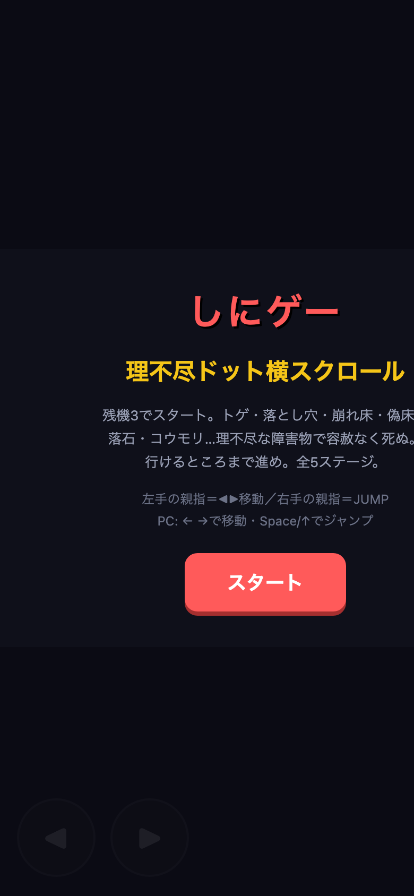
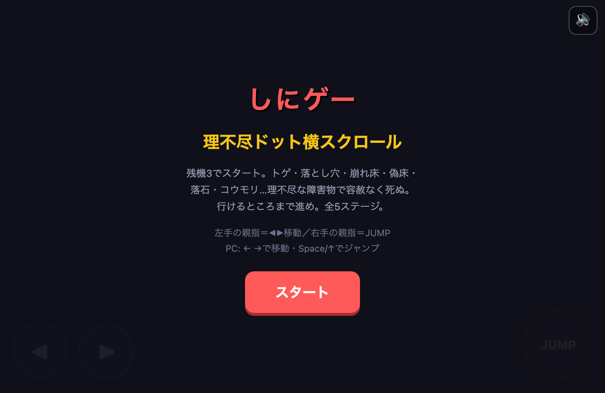

昨夜の AIカンパニー
2026-08-28 · 生成 2026-08-30 08:10:05 +0900
#1 · A · ok
AI:複数モデル合議・担当制の最小実験を1節に落とす
- `20-Areas/AI.md` — §6「複数モデルでの合議・担当制」に「最小実験（案）」節（情報収集係→優先順位付係→対応方針策定係を1テーマ・1往復だけ回す設計）を追加し、frontmatterの`updated`を2026-08
- **音声・動画**: 動画編集の自動化（自分の旅は [[動画編集]]、アプリ化は [[動画編集アプリ]]）
- [x] Transformerの仕組みを理解する（Attention is All You Need）→ 例え話＋図は §3.1
## 3.1 Transformer を例え話で（自分用要約・2026-08-23）
#2 · B · ok
しにゲー:次ステージ or ドット歩きアニメのどちらを先にするか決めて issue 1行
Committed successfully (other unrelated pre-existing modified files remain untouched, as expected).
code/shinige/index.html30-Projects/しにゲー.md


#4 · B · ok
チェーンソーゲーム:切断の手応えを文章だけで1節に落とす
- `30-Projects/チェーンソーゲーム.md` — 「切断の手応え（文章メモ 2026-08-28）」節を追加。「一瞬の抵抗→弾ける解放→静けさ」の3拍子でため・抜け・音・揺れ・余韻を文章化
30-Projects/チェーンソーゲーム.md10-Goals/goals.mdcode/ai-company/.runs/maker-2026-08-28/cycle-04/RESULT.md
## 切断の手応え（文章メモ 2026-08-28）
実装の前に、一撃の感触だけ言葉で固めておく。「一瞬の抵抗 → 弾ける解放 → 静けさ」の3拍子。
- **ため**：刃が触れた瞬間、数フレームだけ画面が食い込んで止まる。切れ味ではなく抵抗を見せる間
#5 · B · ok
情報収集ループ:平日17:30の銘柄ニュース／アプリネタをyamlの1節で固定する
- `code/automation/info_loop_universe.yaml` — 末尾に `schedule:` 節を追加（weekday: 平日(Mon-Fri) / hour: 17 / minute: 30 / timezo
code/automation/info_loop_universe.yaml
#6 · A · ok
財務諸表RPG:経理RPGで仕訳〜決算。結果的に簿記の勉強になる
- `30-Projects/財務諸表RPG.md` — 「2戦目（仕訳2本目）」節を新規追加：現金仕入（借:仕入800／貸:現金800）を1戦目と同じ演出フォーマットで文章化し、現金の借方・貸方の対比という学びのポイントを明記。次の1手を
## 2戦目（仕訳2本目）
- 場面：個人商店1日目の午後、次のイベントは「商品を仕入れて現金で払う」
- 仕訳：(借)仕入 800 / (貸)現金 800
確認したら、この Bot の LINE に返信して FB
よかった／直して／テーマの選び方／実行の仕方。Cursor でも可。にゃみが 社長FB.md に載せる。